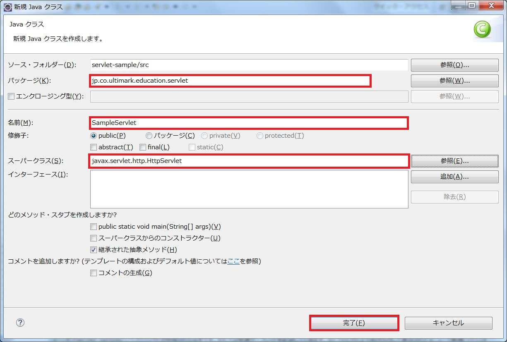
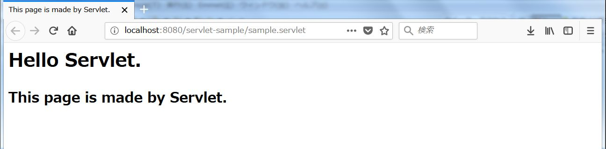
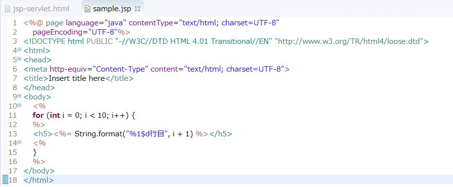

JSPとサーブレット
１．サーブレットとは
サーブレットとはサーバー上でウェブページを動的に生成したり、データ処理を行うためのJavaプログラムです。こちらで解説したとおり、WebアプリケーションはWebサーバーから転送されたリクエストを処理し、Webサーバーに結果を返すという形で動作しますが、この「Webサーバーからのリクエストを受け付ける」、「Webサーバーに結果を返す」という役割を担うのがサーブレットです。言い換えると、サーブレットはWebサーバーとアプリケーションサーバーのインターフェースであると考えることができます。
２．サーブレットの仕組み
上記のとおり、サーブレットはWebサーバーからのリクエストを受け付け、Webサーバーへレスポンスを返す役割を担います。実際にはWebサーバーとサーブレットの間にリクエストプロセッサーという仕組みがあるのですが、リクエストプロセッサーは基本的にリクエストされたURLに対応するサーブレットに処理を委譲しているだけですので、詳細な説明は割愛します。
Webサーバーからリクエストを受け取ったアプリケーションサーバーはリクエストプロセッサーにリクエストを引き継ぎます。リクエストプロセッサーはリクエストされたURLに基づいてリクエストを処理するサーブレットを決定します。つまり、サーブレットはURLに紐付いているということになります。このようにリクエストされたURLを基にして実行すべき処理を決定する形態のWebアプリケーションをアクションベースのWebアプリケーションといいます。
アクションベースのWebアプリケーションに対して、コンポーネントベースのWebアプリケーションという形態もあります。これはリクエストされたURLではなく、リクエストされたリソースに基づいて実行される処理が決定される形態のWebアプリケーションです。コンポーネントベースのWebアプリケーションではアプリケーションはHTMLファイルと紐付くことになります。これはあたかもHTMLファイルの背後でJavaプログラムが実行されているようなイメージになりますので、HTMLファイルに紐付くJavaクラスをバッキングビーン（Backing Bean）と呼んだりします。
※ BeanとはJavaオブジェクトの慣用的な呼び方です。
３．Hello Servlet
それでは実際にEclipseでWebアプリケーションを作成してみましょう。Eclipseの上部メニューからファイル→新規→その他と選択し、表示された画面でWeb→動的Webプロジェクトを選択して次へをクリックしてください。
プロジェクトの設定を行います。以下の画像のとおりに入力していってください。
これでservlet-sampleというプロジェクトが作成されたはずです。それでは早速サーブレットを記述していきます。srcフォルダの上で右クリックして表示されたメニューで新規→クラスを選択してください。表示された画面で以下のように入力し、完了をクリックします。
全てのサーブレットはjavax.servlet.http.HttpServletクラスまたはそのサブクラスを継承しなければならないという制約がありますので、スーパークラス（継承元クラス）はjavax.servlet.http.HttpServletクラスとしています。作成したSampleServletクラスを以下のように実装してください。

記述が完了したらAlt + Shift + Xを同時押しした後にRを押下してください。サーブレットが起動して以下のような画面が表示されるはずです。
これでサーブレットによるHTMLの生成が完成しました。SampleServletクラスのソースコードと実際に表示された画面をよく見比べてみてください。PrintWriterオブジェクトによってサーブレットがHTMLを書き出している様子がつかめると思います。これが動的なHTMLの生成です。
４．JSPとは
サーブレットによって動的なHTMLを生成する方法を見てきました。しかし、上記のように簡単なHTMLなら良いですが、複雑なHTMLをサーブレットで記述しなければならないとなるとこの方法では問題がありそうです。サーブレットからHTMLを生成する際はPrintWriter#writeメソッドの引数にHTMLに該当する文字列を渡しているということになるのですがこの方法だとHTMLに構文エラーがあったとしても事前に検出することができません。なぜなら、PrintWriterオブジェクトのwriteメソッドは引数で渡された文字列を書き出しているだけであり、引数で渡された文字列がHTMLなのか単なるプレーンテキストなのか判断ができないからです。
そこでHTMLを雛形として、そこにロジックを埋め込むことによって動的なHTMLを生成する方法が考えられました。これがJSP（Java Server Pages）です。JSPはHTMLの構造を踏襲しつつ、この後説明する式やスクリプトレットといった仕組みでHTMLファイルにJavaプログラムを埋めこむことができるようにしたものです。これによって、サーブレット内でPrintWriterを使ってHTMLを書き出す必要はなくなりました。
５．Hello JSP
それでは実際にJSPを作成してみましょう。servlet-sampleの直下のwebappフォルダを右クリックして表示されたメニューで新規→その他を選択してください。表示された画面でWeb→JSPファイルを選択して次へを押下します。
ファイル名をsample.jspとして完了をクリックしてください。
これでJSPの雛形がwebappフォルダ直下に作成されたはずです。ここで作成されたJSPファイルの<body>から</body>の間に以下の一文を加えてみてください。
<%= new java.util.Date() %>
sample.jspがエディターで表示されている状態でAlt + Shift + Xを同時押しした後にRを押下してください。JSPが起動して以下のような画面が表示されればOKです。
先ほどJSPファイルに追記した<%= new java.util.Date() %>の部分が式と呼ばれる構文です。これはJSPファイルにJavaプログラムを埋め込むための特殊な記法なのですが、一つの式にはJavaプログラムを一行しか記述することができません。故に、式の中に記述するJavaプログラムは文末記号であるセミコロン（;）を記述しません。一行しか書けないので文末記号の意味がないからです。また式の中には戻り値のないメソッドを記述することもできません。ですので以下のような記述はコンパイルエラーとなります。
<%= System.out.println("Hello JSP") %>
これはJSPを解釈するTomcatのプロセッサーが式の中身を評価して得られたオブジェクトのtoStringメソッドを暗黙のうちに呼び出しているからです。では、以下のような記述もコンパイルエラーとなるのでしょうか。
<%= 1 %>
1はint型の値ですね。int型は基本データ型でありオブジェクトではありません。従ってtoStringメソッドも持っていません。この理屈からするとコンパイルエラーになりそうですが実際はそうはなりません。int型の値である1はそのラッパーオブジェクトであるIntegerクラスのインスタンスとみなされるためです。これをオートボクシング（Auto Boxing）といいます。
これから記事を読みながらWebアプリケーションの動作を頻繁に確認していくことになると思いますが、これは頻繁にTomcatの起動と停止を繰り返すということを意味します。Tomcatの起動と停止をEclipseから行うにはEclipseのサーバービューを使うと便利ですので、ここでご紹介しておきます。上部メニューからウィンドウ→ビューの表示を選択し、表示された画面でサーバー→サーバーを選択してOKをクリックしてください。図のようなビューが表示されます。ここからデバッグ起動、通常起動、停止などの操作を行うことができます。
以降は特別な説明がない限り、Tomcatの起動と停止はこのサーバービューから実行するものとして進めていきます。
５．式とスクリプトレット
前述のように、JSPでは式とスクリプトレットという仕組みを使ってHTMLにJavaプログラムを埋め込むという手法を採用しています。式は一行のプログラムしか実行できないのに対してスクリプトレットは複数行のプログラムを記述することが可能です。もちろん条件分岐やループ処理の記述も可能です。一見、スクリプトレットの方が高機能で式の存在意義があるのだろうかと考えてしまいますが、式はHTMLに値を出力することに特化した構文であり、このためにあえて簡易なつくりになっていると解釈した方が理解しやすいと思います。
先ほどJSPに現在時刻を出力するJSPのサンプルをお見せしましたが、先ほどのJSPはこのように書き換えることもできます。10行目にある以下の記述がスクリプトレットです。
<% java.util.Date currentDate = new java.util.Date(); %>
では表示を確認してみましょう。Tomcatを起動して以下のURLにアクセスしてみてください。
http://localhost:8080/servlet-sample/sample.jsp

スクリプトレットを使ってみましたが、画面の表示は（表示される日時は違いますが）先ほどと全く同じ内容になったと思います。それではsample.jspを以下のように書き換えてみてください。
10行目から16行目に注目してください。for文の開始の波括弧と終了の波括弧が分離しているのが分かると思います。そして、開始と終了の間に式が記述されています。これを実行するとどのような表示になるでしょうか。実際に確かめてみましょう。再びTomcatを起動してsample.jspにアクセスしてみてください。
どうでしょうか。スクリプトレットの使い方が何となく理解できましたか？実際のところ、検索結果を画面に表示させたいといった要件はどのようなシステムにも必ず存在します。検索結果ですから当然件数は可変です。このような場合はスクリプトレットでforループを使うことで解決できます。こういった制御構文の使い方を理解してしまえばスクリプトレットを攻略したも同然です。
次回はJSP・サーブレットを扱う上で非常に重要な概念であるリクエストとレスポンスについて解説していきたいと思います。